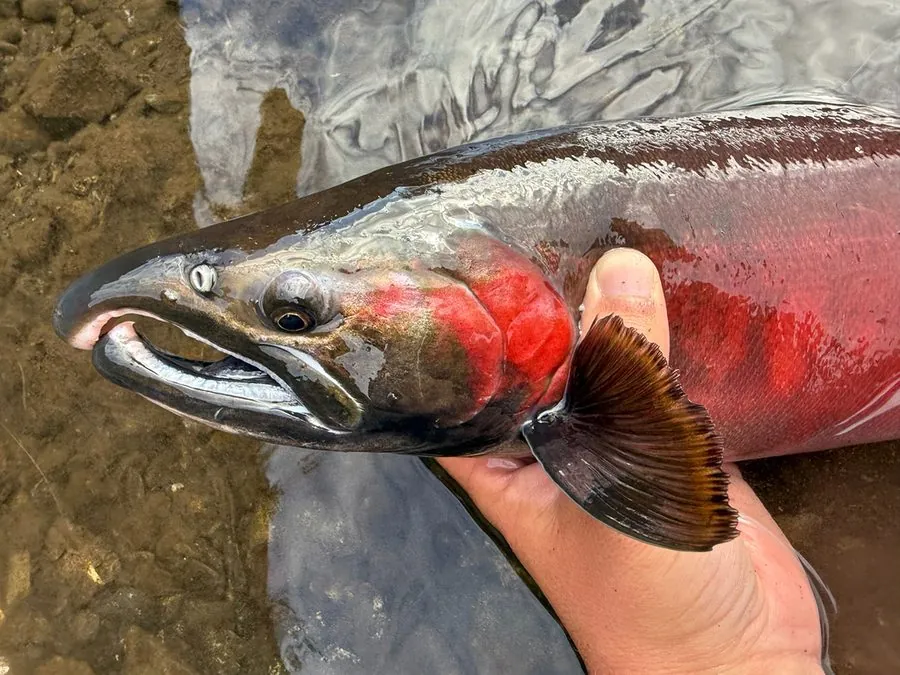

鱼类 · 动物界
银鲑 Oncorhynchus kisutch

北太平洋的溯河鲑鱼，成鱼体侧银亮、背部暗绿，繁殖期雄鱼下颌弯曲，是重要的商业捕捞和养殖鱼种。
- 分类
- 门脊索动物门纲辐鳍鱼纲目鲑形目科鲑科属太平洋鲑属
- 栖息环境
- 北太平洋的海洋育肥场及沿岸河流，繁殖期溯河到溪流
- 地理分布
- 北太平洋，从日本北部、俄罗斯远东到阿拉斯加和加利福尼亚
- 保护级别
- IUCN 无危（LC）；美国中加州部分种群列为濒危
物种志
银鲑体呈纺锤形，成鱼体侧银亮，背部暗绿或蓝绿，腹部白色，身上有少量黑色小斑点。繁殖期雄鱼体色变暗，背部隆起，下颌向上弯曲成钩状。成鱼体长一般 50–80 cm，最大可达 1 m，体重 3–7 kg。
银鲑分布于北太平洋，从日本北部、俄罗斯远东到美国阿拉斯加和加利福尼亚，亚洲和北美都有溯河种群。它在海洋中生活 1–3 年，性成熟后溯河回到出生溪流产卵，产卵后多数个体死亡。银鲑以小鱼、虾和头足类为食，是重要的商业捕捞和养殖鱼种，鱼肉呈橙红色，适合煎烤和烟熏。由于河流栖息地破坏和过度捕捞，部分种群数量下降，美国已将中加州种群列为濒危，全球评估为无危。
形态与习性
- 食性小鱼、虾和头足类
- 体长一般 50–80 cm，最大可达 1 m
- 体重一般 3–7 kg
- 洄游海洋生活 1–3 年后溯河产卵，产卵后多数死亡
- 繁殖特征繁殖期雄鱼背部隆起、下颌弯曲成钩
- 经济价值重要商业捕捞和养殖鱼种，鱼肉橙红色
趣味知识
- 银鲑在海洋中生活 1–3 年，然后准确回到出生的溪流产卵。
- 繁殖期的雄鱼下颌会向上弯曲成钩状，体色也变得暗红。
- 银鲑是鲑鱼中肉质较细嫩的一种，适合煎烤和烟熏。